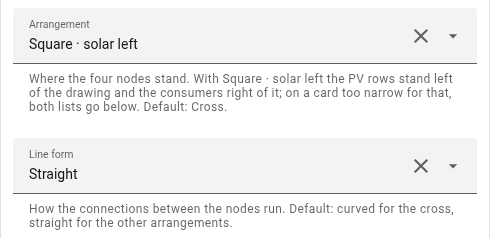
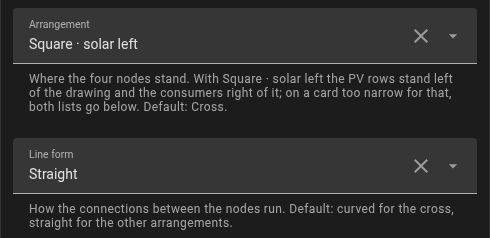

Arrangements
Where solar, grid, house and battery stand is up to you: the cross, two squares turned by 45° and two triangles. What the card shows is the same in every arrangement - figures, rings, dots, lists. The card on this page runs on invented values with three PV sources.
Try it: the switches above the card change what you would change in the editor; below it is what of that ends up in YAML.
Cross
Solar at the top, grid on the left, house on the right, battery at the bottom - the arrangement the card started with, and the default. The connections are curved.
Square · solar right
Turned by 45°: solar top right, house bottom right, grid top left, battery bottom left. Both lists stand on the right, the PV rows level with solar, the consumers level with the house.
Square · solar left
Turned the other way: solar top left, house top right, grid bottom left, battery bottom right. The PV rows stand left of the drawing, the consumers right of it - each fan runs to its own node. That needs about 590 px of width; on a narrower card, a phone or a column of the sections view, both lists stand below.
Triangle · house centre
Solar, house and battery one above the other, the grid left of the house. The triangle is taller than wide and so never wider than 320 px. Without a battery its lowest third goes.
Triangle · battery centre
House and battery swapped: solar at the top, the battery in the middle with the grid beside it on the left, the house at the bottom. The lists stand symmetrically - the PV rows at the top level with solar, the consumers at the bottom level with the house. The line from solar to the house swings past the battery on its left. Without a battery it looks like Triangle · house centre.
Setting it
In the editor, Display has Arrangement and Line form at the top. The line form is curved for the cross and straight for the other arrangements; both can be changed.

In the energy mode the arrows at grid and battery point towards the middle of the drawing when energy was imported or discharged, and away from it for export and charging. In both triangles they stand as in the cross.
layout: square_left # cross | square_right | square_left | triangle | triangle_battery
flow:
lines: curved # curved | straight